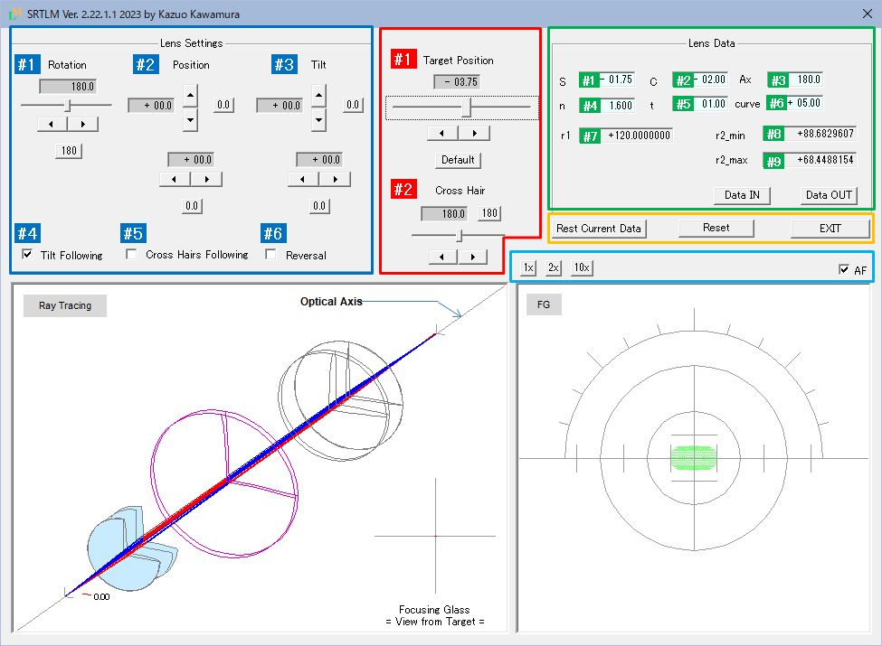
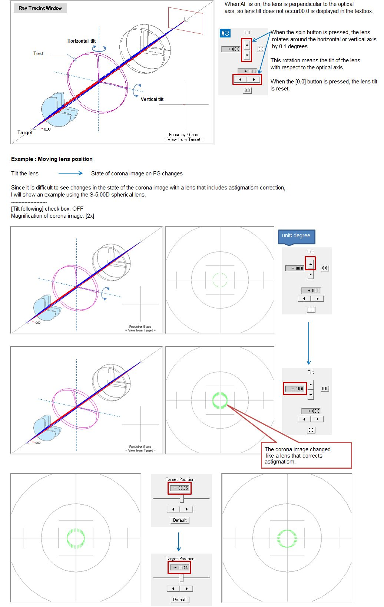
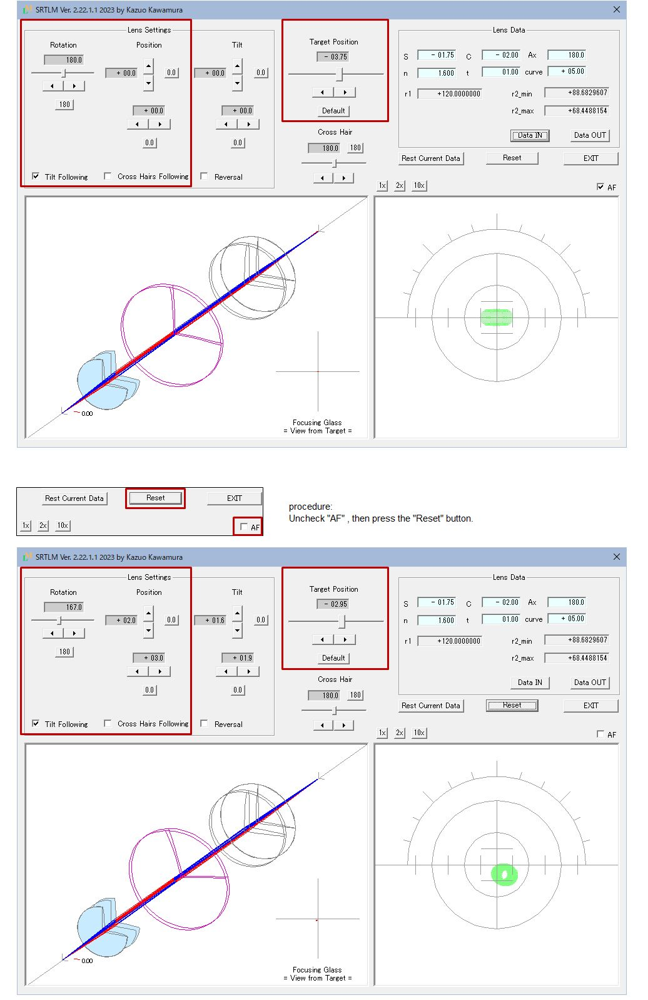

SRTLM Instruction Manual
When it comes to lens meters, auto lens meters are the mainstream these days, and there may be people who have never used manual lens meters before. I think that the lens meter itself is still an essential item for those who work with eyeglasses.
I created a simulation tool with the hope that you would learn the properties of eyeglass lenses through a manual lens meter. Hereafter abbreviated as SRTLM.
If you would like to know about lens meters and eyeglass lens roughly, please read about Lens Mater .
Features
-
Measurement of single vision lenses (spherical and toric) can be simulated.
-
Focusing of lens
-
The movement of the corona image (*) accompanying the movement of the lens (vertical movement, horizontal movement and rotation), the rotation of the focusing glass, the occurrence of astigmatism due to the tilt of the lens, etc.
*The coronal image consists of a small disk called a target that moves back and forth along the optical axis, and has 36 concentric pinholes. A bundle of rays passing through a pinhole is visualized as an image with a focusing glass. There are also types of targets that combine corona target and a cross target (cross slit). This tool assumes only corona targets.
-
-
You can check the shape of the test lens.
-
The test lens is rendered in 3D, including sections along the strong/weak principal meridians.
-
-
Ray tracing is reproduced in 3D
-
How rays emitted from the target form an image on the focusing glass is simulated.
-
Movement, rotation, and tilt of the test lens are reproduced in real time.
-
* Ray tracing cannot be seen with the actual lens meter. Since SRTM is a simulation tool, it draws ray traces.
-
-
You can create, save, and recall the lens you want to simulate.
-
It can be specify the spherical power, cylindrical power, axis direction of the cylindrical lens, refractive index, center thickness, and front curve.
-
The created lense can be saved and loaded.
-
Features omitted in SRTM compared to a real lens meter (assuming a manual telescopic lensmeter)
-
Diopter adjustment
In the original lens meter, there is an eyepiece system after the focus glass, It is necessary to adjust the dioptric power to see the focusing glass clearly, but this is omitted in SRTM (see the imaging diagram in Fig. 1).
-
Prism compensator
SRTM does not assume the measurement of prism lenses and cannot create prism lenses.
Therefore, the lens system for the prism compensator has also been omitted (see the imaging diagram in Fig. 1).
Prerequisite
-
It is assumed that you have some knowledge of eyeglass lens when using SRTM. about Lens Meter If you refer to this, I think that you can operate without any problems.
Startup screen
Figure 1 shows the screen when SRTLM is started.
Default lens data appears in the Lens Data section.
For a lens that include astigmatic correction, there is
two points
of focus.
SRTLM draws the state when the focus is on the (-) side at startup.
This is by design.
Each section is color coded to explain each feature.
* I will explain first, about the text boxes displayed in the blue frame (Lens Settings section), the red frame (General section), and the green frame (Lens Data section). Please observe the following rules.
| blue frame | background gray | do not enter the number directly | change with slider or spin button |
| red frame | background gray | do not enter the number directly | change with slider or spin button |
| green frame | background sky blue | can enter numbers directly | can also use the arrow keys to change |
* Hereafter, the lens meter is abbreviated as LM, and the focusing glass as FG.

Fig. 1 Screen configuration
Below is a list of features, color-coded by section in Fig. 1.
Click on the underlined feature name to go to feature details.
| [Ⅰ] | Upper side of screen | |||
| (1) | General | Operate as functions of LM | ||
| #1 | Target Position | Function to move the target back and forth on the optical axis (equivalent to the LM's power measurement dial) |
||
| #2 | Crosshair Rotation | Ability to rotate FG's crosshair |
||
| (2) | Lens Settings | Manual operation | ||
| #1 | Lens Rotation | Operations required to measure astigmatic lens | ||
| #2 | Lens Position | Vertical and horizontal movement of the lens to position the corona image at the center of the FG |
||
| #3 | Lens Tilt | LM does not have the function to display the tilt of the lens. In SRTLM, It is intentionally provided because it can be expected to have a large effect as a simulation. |
||
| CheckBox | Utility Functions | |||
| #4 | Tilt Following | Link the lens movement with the curve on the back of the lens. Since the back surface of the lens is in contact with the lens holder of the LM, the tilt of the lens changes according to the curve of the back surface of the lens when the lens moves up, down, left, or right. Normally, when the lens is fixed after being moved, it tilts, so it is checked by default. |
||
| #5 | Crosshair Following | If checked, the movement of the lens will follow the crosshair at any angle (this is not possible with the actual LM). This is a feature for future use and is not checked by default. |
||
| #6 | Reversal | Reverce the orientation of the lens. It is possible to simulate the meniscus shape of spectacle lenses and how the center thickness of the lens affectted the orientation of the lens. |
||
| (2) | Lens Data | Various data of the lens | ||
| #1 | spherical power | Enterable: See details | ||
| #2 | cylinder power | ditto | ||
| #3 | Cylindrical lens axis | ditto | ||
| #4 | refractive index | ditto | ||
| #5 | center thickness | ditto | ||
| #6 | curve in front of lens | ditto | ||
| #7 | Radius of the front surface of the lens | Cannot be entered: Calculation results based on lens data are displayed |
||
| #8 | Radius of the minor meridional direction on the rear surface of the lens |
ditto | ||
| #9 | Radius of the mojor meridional direction on the rear surface of the lens |
ditto | ||
| DATA IN | Loading saved lenses data | |||
| DATA OUT | Saving created lenses data | |||
| (4) | Others: Buttons | |||
| RESET CURRENT DATA | Returns to the initial state of the lens set in [Lens Data] | |||
| RESET | Return when loaded with [Data In] | |||
| EXIT | Program exit | |||
| 1x | 1x: Magnification of corona image (default) | |||
| 2x | 2x: Magnification of corona image | |||
| 10x | 10x: Magnification of corona image | AF(Check Box) | Simulation of lens settings when making glasses. When unchecked, the lens position, target position, and lens rotation change randomly. |
|
| [Ⅱ] | Lower side of screen | |||
| (1) | Left Window | Ray Tracing | ||
| (2) | Right Window | Drawing of focusing glass(FG) and corona image | ||
[Ⅰ] - (2) - #1 Lens rotation (unit:[°] degree) Operation to manually rotate the set lens.
[Ⅰ] - (2) - #2 Lens position (unit: mm) Operation to move the lens up, down, left, and right by placing the hand on the set lens.
The relationship between lens movement and corona image position change is omitted here. If you want to learn about the ophthalmic lens, please set several [Lens Data] and check the positional relationship between the lens and the corona image. The deviation of the corona image from the center of FG means the amount of prism (symbol Δ: unit: [Diopter]). One scale of the crosshair corresponds to 1Δ[D].
[Ⅰ] - (2) - #3 Lens tilt (unit:[°] degree)
Originally, the function is linked to lens movement, so the spin button is not necessary, but it is purposely provided for SRTM simulation purposes.

The astigmatism produced by tilting the lens was about 0.4D. Actually, it is slightly different from the corona image of the SC(-) lens for correcting astigmatism. The corona image itself is slightly below the center of the FG crosshair If you set the magnification of the corona image to [x10], you can clearly see the deviation from the center. The imaging state is also not clearly linear, and other aberrations are included. SRTLM can also simulate the properties of such lenses.
[Ⅰ] - (3) Setting the lens data
You can directly enter a number in each text box, but you can also use the arrow keys to increase or decrease the number. The following describes how to use the arrow keys. It's a very useful feature once you get used to it.
#3 Ax [axial direction of the lens]
#4 n [refractive index]
It seems that lenses for eyeglasses are used as 1.5 to 1.9 (1.523 to 1.892 for glass materials, 1.498 to 1.76 for plastic materials).
Currently, I recognize that plastic with a refractive index of 1.60 is the mainstream material.
If you specify less than 1.3, the drawing of the ray tracing window may be disturbed or an error message may be displayed.
#5 t [center thickness]
Please simulate with SRTL how to reduce the thickness of the (+) lens when making eyeglasses.
#6 curve [Curve of the front surface of the lens (refractive power of the front surface)]
* I wrote "curve (refracting power of the front surface of the lens)" in the title. Then the unit should be D (Diopter). I don't know why it is called a curve, but the refractive power of the lens (the refractive power of the lens front and rear surfaces, the lens thickness, and the refractive index determine the refractive power of the lens) and It may have come to be called a curve to distinguish it. Certainly, considering the cross-sectional shape, the expression "curve" seems intuitive and easy to understand.
When saving, if you add "#" to the beginning of the file name and save it, This data will be displayed by default the next time you start SRTLM.
[Ⅰ] - (4) Others
Checkbox AF
Simulation of lens settings when making glasses.
When unchecked, the lens position, target position, and lens rotation change randomly.
